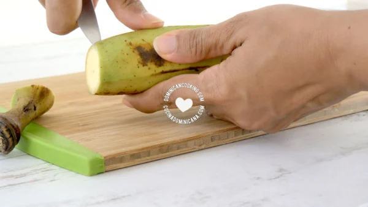
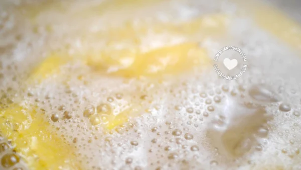
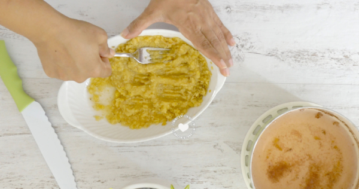
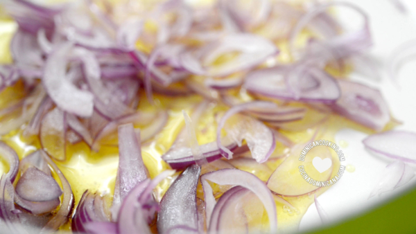

El Mangú es uno de los platos más queridos de los dominicanos, base de "Los
Tres Golpes", el desayuno más
completo y complejo de nuestra gastronomía.
He elegido esta receta ya que es uno de mis platillos
favoritos, haciendome recordar la cultura dominicana y ya que esta es un plato muy tradicional y deliocioso
entre
lo que podemos encontrar en la gastronomia dominicana es mas que un placer compartir la receta de esta
delicia.
Los Tres Golpes
Los plátanos para el desayuno se comen generalmente como mangú, que implica el hervir de los plátanos y
triturarlos con un poco de sal y aceite, acompañado por queso, huevos y salami frito (los Tres Golpes). Un poco
pesado en el sistema, quizá, pero bastante nutritivo.
También depende de que tan monótona es tu dieta. Si no comes más que plátanos, entonces no es tan beneficioso
como una dieta variada que incluya plátanos.
Ingredientes
4 Platanos Verdes
Salami Dominicano
1 libra de Queso Blanco
1 cucharadita de sal
4 cucharadas de mantequilla
1/2 de agua a temperatura ambiente
Como hcer la cebolla salteada
1 cebolla roja grande
2 cucharadas de aceite de oliva
1 cucharadita de vinagre de frutas
½ cucharadita de sal (o más, al gusto)
Preparar el Mangu

Pelar plátanos: Pela los plátanos (ver como). Corta en octavos (dos mitades, luego las mitades en cuartos).
Remueve la parte central del plátano donde están las semillas (opcional)

Hervir plátanos: Hierve los plátanos en agua, a la que has agregado la sal, hasta que estén muy blandos.
Retira del fuego.

Majar plátanos: Maja los plátanos recién sacados del agua con un tenedor (cuidado de no quemarte). Agrega
mantequilla (o aceite de oliva) y mezcla bien. Agrega el agua fría y mezcla hasta que tengas un puré bien
suave.
Preparar la cebolla

Saltear la cebolla: Corta la cebolla en tiras o ruedas finas. Calienta el aceite en una sartén a fuego bajo.
Cuece removiendo hasta que la cebolla se tornen translúcida. Agrega vinagre y sazona con sal al gusto.
Sirve el mangu con la cebolla, y acompaña con huevos fritos,revoltillo,salami o queso frito
Esta receta fue copiada de la pagina https://www.cocinadominicana.com/292/mangu